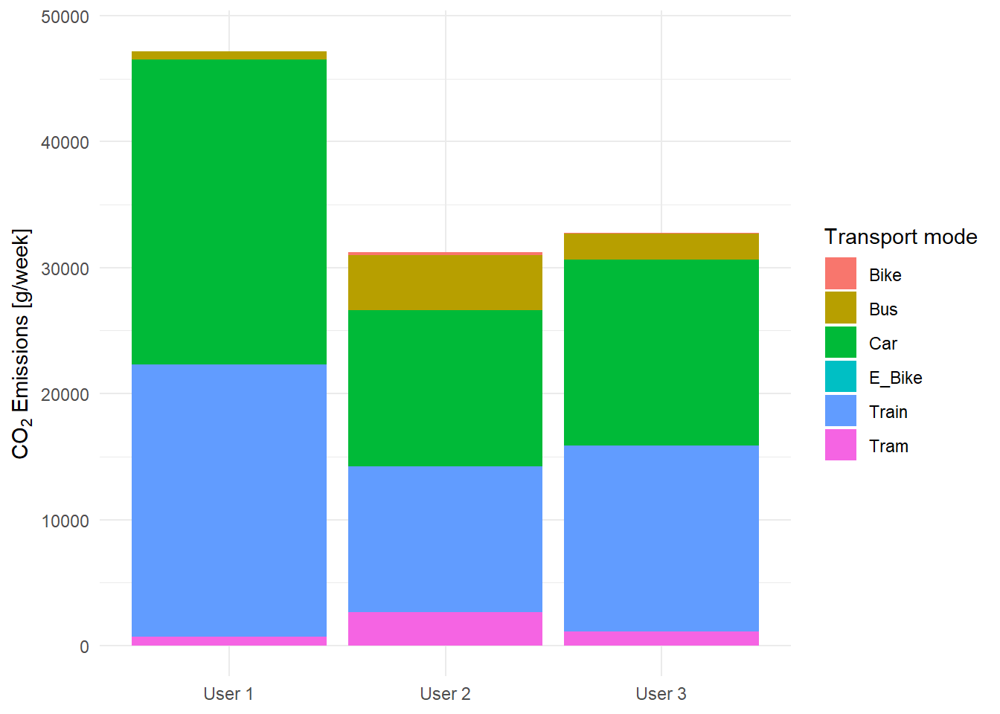

Code
# Preliminaries
# Import libraries
library("dplyr")
library("ggplot2")
library("gridExtra")
library("leaflet")
library("lubridate")
library("readr")
library("raster")
library("RColorBrewer")
library("sf")
library("terra")
library("tidyterra")GEO880 - Computational Movment Analysis (UZH) / Patterns and Trends in Environmental Data (ZHAW)
Equally shared responsibilities within our team, same grade requested.
# Preliminaries
# Import libraries
library("dplyr")
library("ggplot2")
library("gridExtra")
library("leaflet")
library("lubridate")
library("readr")
library("raster")
library("RColorBrewer")
library("sf")
library("terra")
library("tidyterra")The transport sector is one of the major contributors to global carbon dioxide (CO2) emissions (Solaymani, 2019) with road transportation responsible for around 20 percent of emissions. Almost half of these emissions are caused by passenger road vehicles (Suarez et al., 2022). Due to the strong negative impact of CO2 emissions on climate change and the challenges arising, they are receiving gradually more concern (Dong et al., 2022). Driving behavior like acceleration as well as terrain characteristics such as a slope have valid effects on CO2 emissions (Dong et al., 2022; Suarez et al., 2022; Xu et al., 2022). However, not only road traffic is accountable for the emissions in the transport sector. Trains, trams, and – when also taking production emissions into account – even bicycles cause CO2 emissions (BAFU, 2023; Mobitool, 2020). Using validated movement data from 3 students collected by Posmo the CO2 emissions caused by different modes of transport were assessed.
The objectives of this report are to determine the weekly average emissions per person and analyse how much the complexity of a calculation approach changes the results. Furthermore, we compare the results of our calculation with the emission values provided by Posmo and assess the differences for each mode of transport.
## load data
# define a function to load the posmo data
loadPosmoData <- function(filepath){
read_delim(filepath, delim = ",") |>
# remove the place name
subset(select = -c(place_name)) |>
# remove NA values for mode of transport, we need a specified mode of transport
filter(!is.na(transport_mode))
}
# load all validated Posmo track files
posmo1 <- loadPosmoData("data/posmo_tracks/posmo_1.csv") # our own data
posmo2 <- loadPosmoData("data/posmo_tracks/posmo_2.csv") # our own data
posmo3 <- loadPosmoData("data/posmo_tracks/posmo_3.csv") # Posmo data tracking pool
# create one data set
posmo <- full_join(posmo1, posmo2)
posmo <- full_join(posmo, posmo3)
## filter Switzerland
# remove rows with NA in the coordinates
posmo <- posmo[!is.na(posmo$lon_x), ]
# convert to sf object and transform to LV95
posmo <- st_as_sf(posmo, coords = c("lon_x", "lat_y"), crs = 4326) |>
st_transform(2056)
# extract coordinates
posmo_coord <- st_coordinates(posmo)
# create one dataframe including the coordinates
posmo <- cbind(posmo, posmo_coord)
# read boundaries of Switzerland and the cantons
CH_boundaries <- st_read("data/swissboundaries3D/CH_boundaries.gpkg", crs = 2056)
CH_cantons <- st_read("data/swissboundaries3D/CH_cantons.gpkg", crs = 2056)
# filter points that are within Switzerland
posmo <- st_filter(posmo, CH_boundaries)For the analysis of the emissions, we included Posmo data from a data pool provided in the course Computational Movement Analysis. We only considered the data sets where a validation of the means of transport was conducted because a precise classification of the mode is crucial for our analysis. Therefore, only 3 data sets were included (see Figure 1). Our final data set included 111’253 data points with the following attributes:
The three data sets were recorded over different time periods. Data set 1 ranges from April 1st to May 11th 2023, data set 2 from April 6th to June 11th and data set 3 from April 11th to June 16th 2023. The temporal resolution of our tracking data mostly varies between 4 and 16 seconds.
Finally, we included the emissions calculated by Posmo based on our tracking data in our analysis.
In order to calculate our own emissions, we have compiled emission values for various means of transport for Switzerland and Germany.
ggplot() +
geom_sf(data = CH_cantons, alpha = 0) +
geom_sf(data = posmo, aes(color = transport_mode), size = 0.8) +
coord_sf(datum = st_crs(2056)) +
labs(x = "E",
y = "N") +
guides(color = guide_legend(title = "Mode of Transport", )) +
theme_minimal()
# get all the transportation modes
unique(posmo$transport_mode)
# save transportation modes we need in a vector
transport_modes = c("Car", "Bus", "Train", "Tram", "Bike", "E_Bike")
# filter to only the transportation modes we need
posmo <- posmo |>
filter(transport_mode %in% transport_modes)
# functions to determine moving window
movingWindowLag <- function(E, N, n){
sqrt((lag(E, n) - E)^2 + (lag(N, n) - N)^2)
}
movingWindowLead <- function(E, N, n){
sqrt((E - lead(E, n))^2 + (N - lead(N, n))^2)
}
# calculate moving window
posmo <- posmo |>
mutate(
minus3 = movingWindowLag(X, Y, 3),
minus2 = movingWindowLag(X, Y, 2),
minus1 = movingWindowLag(X, Y, 1),
plus1 = movingWindowLead(X, Y, 1),
plus2 = movingWindowLead(X, Y, 2),
plus3 = movingWindowLead(X, Y, 3)
)
# calculate the mean step length
posmo <- posmo |>
rowwise() |>
mutate(
stepMean = mean(c(minus3, minus2, minus1, plus1, plus2, plus3))
) |>
ungroup()
# define a column 'static'
posmo <- posmo |>
ungroup() |>
mutate(static = stepMean < 215)Pre-processing was necessary for further analysis. We decided to reduce our assessment area to Switzerland. First, our conducted emission values are mostly based on Swiss and German data and mode of transports in other countries may have different emissions due to other standards. Second, we conducted a slope analysis which would have been computationally too expensive to calculate for multiple countries.
We focused on transportation modes which generate CO2 emissions. We do not include airplanes in our considerations as we are only going to focus on trajectories in Switzerland. Thus, we included car, bus, train, tram as well as e-bikes and bikes as they produce CO2 emissions when taking the production process into account.
We removed all static points as we are interested in the emissions of moving vehicles (see Figure 2). We thereby considered a threshold of 215m. The average velocity of a bicycle is 12.8 km/h (BFS & ARE, 2023). With an assumed average tracking cycle of 10 seconds this would correspond with a distance of around 215 meters per minute.
posmo |>
ggplot(aes(X,Y)) +
geom_point(aes(colour = static)) +
coord_fixed()+
labs(x = "E",
y = "N",
color = "Static")+
theme_minimal()
# remove static points
posmo <- posmo |>
filter(!static)
We removed velocities exceeding 200 km/h, which is the highest velocities InterCity trains in Switzerland travel (Knupfer, 2014) and set the minimum speed to 10 km/h as this corresponds with the average velocity of bicycles. Furthermore, we excluded all slopes which are steeper than 25%, which corresponds to 14.4° being the steepest mountain pass slope in Switzerland (Wikipedia, 2022).
# read the raster data using the terra package
dhm25 <- terra::rast("data/DHM25/dhm25_grid_raster.asc")
# set the raster crs to LV03
crs(dhm25) <- terra::crs("+init=EPSG:21781")
# convert Posmo data to LV03 to match the CRS of the DHM25
posmo_lv03 <- posmo |>
st_transform(crs = 21781) |>
subset(select = -c(X, Y))
# extract the height information for each Posmo location
height_dhm <- extract(dhm25, posmo_lv03)
# join the height back to the posmo data
posmo$height <- height_dhm$dhm25_grid_raster## create dataframe with conducted emission values
# for cars: we have various sources
c_car <- c(130, 162, 122.3, 200)
# for buses
c_bus <- c(42, 108, 88.7, 25.15)
# for trains
c_train <- c(93, 110.9)
# for trams
c_tram <- c(80, 37)
# for e-bikes
c_ebike <- 14
# for bikes
c_bike <- 8
# create a look-up table for the different emission constants
constants_emission <- data.frame(
transport_mode = transport_modes,
stringsAsFactors = FALSE
)
# include values for emissions and calculate mean, median, minimum and maximum
constants_emission$constant_gkm <- list(c_car, c_bus, c_train, c_tram, c_bike, c_ebike)
constants_emission <- constants_emission |>
mutate(
avg = sapply(constant_gkm, mean),
med = sapply(constant_gkm, median),
min = sapply(constant_gkm, min),
max = sapply(constant_gkm, max)
)
## calculate the number of weeks for the recordings
# define a function to get the number of weekdays recorded per user id
getDays <- function(user, posmo_data){
# filter the user
posmo_user <- posmo_data |>
filter(user_id == user)
# convert the datetime format to days and get the unique days
recorded_days <- unique(as.Date(posmo_user$datetime, format = "%d"))
# return the number of unique days
return(length(recorded_days))
}
# save the unique user_ids in the data set
posmo_userids <- unique(posmo$user_id)
# make an empty data frame with the number of days per users
posmo_days_per_user <- data.frame(user_id = posmo_userids)
# create an empty vector to append
number_of_days = c()
number_of_weeks = c()
# use the created function
for (i in posmo_userids){
day = getDays(i, posmo)
number_of_days <- append(number_of_days, day)
week = day/7
number_of_weeks <- append(number_of_weeks, week)
}
# add the number of days and weeks rounded to 3 digits to the user_id
posmo_days_per_user$days <- number_of_days
posmo_days_per_user$weeks <- round(number_of_weeks, 3)To calculate the emissions we first had to determine values for the CO2 emissions for the considered transportation means. As they strongly vary depending on the sources we included multiple values for some of the modes of transport. In order to determine the influence of the complexity of an approach we also considered other factors such as the effect of velocity or slope on the CO2 emissions. Thus, we pursued three different approaches: a simple one, where we multiplied the average emission value by the distance; a speed approach and a slope approach. To be able to compare the results we calculated the 7-days average due to the varying time periods of the data sets.
# calculate the distances [m], the timelag [s], the speed [m/s], and the speed [km/h]: use group_by to make sure it only calculates for one user id and not between different user ids
posmo <- posmo |>
group_by(user_id)|>
mutate(
distance_m = sqrt((lead(X, 1) - X)^2 + (lead(Y, 1) - Y)^2),
distance_km = distance_m/1000,
timelag_s = as.integer(difftime(lead(datetime), datetime),
units = "secs"),
speed_ms = (distance_m/timelag_s),
speed_kmh = (speed_ms*3.6),
speed_change_ms = lead(speed_ms, 1) - speed_ms,
acceleration_ms2 = speed_change_ms/timelag_s,
acceleration = acceleration_ms2 >=0
) |>
ungroup()
# remove NA distance values
posmo <- posmo |>
filter(!is.na(distance_km))
# group by user_id and transport_mode and sum up the distance in km
posmo_traveldistance <-
posmo |>
group_by(user_id, transport_mode) |>
summarise(sum_km = sum(distance_km))
# join the lookup table to the initial data frame
posmo_traveldistance <- posmo_traveldistance |>
left_join(constants_emission, by = "transport_mode")
# join the number of recording days to the data frame
posmo_traveldistance <- posmo_traveldistance |>
left_join(posmo_days_per_user, by = "user_id")
# multiply the CO2 emissions constant with the traveled distance and divide by the number of recorded days
posmo_traveldistance <- posmo_traveldistance |>
mutate(co2_emissions_g = sum_km * avg,
co2_emissions_g_per_d = co2_emissions_g/days,
co2_emissions_g_per_w = co2_emissions_g/weeks)
# calculate the total emissions by user ID and transportation mode
emissions <- aggregate(co2_emissions_g_per_w ~ user_id + transport_mode, posmo_traveldistance, sum)To assess the influence of increasing complexity for the emission values we focused our analysis solely on car emissions. For the speed approach we used information about the change in car emissions for velocities between 100 and 130 km/h by the Umweltbundesamt (n.d.). To estimate emissions at lower velocities we used a non-linear least squares regression, illustrated in Figure 3. We assumed that the reduction in CO2 emissions decreases at lower velocities and therefore set a threshold at 75 km/h at which CO2 emissions are constant (Metcalfe & Boulter, 2022).
## preparation of data for speed approach
# remove NA and infinitive values
posmo <- posmo |>
filter(!is.na(speed_kmh)) |>
filter(!is.infinite(speed_kmh))
# check range of speed values
range(posmo$speed_kmh)
# filter speeds according to our thresholds
posmo <- posmo |>
filter(speed_kmh >= 10) |>
filter(speed_kmh <= 200)
# save speed and their respective emission values [g/km] as variables
speed <- c(100, 110, 120, 130)
emission <- c(146, 158, 172, 190)
## interpolation of car speed values
# fit a non-linear least squares regression
fit_emission <- nls(emission ~ a * exp(b * speed), start = list(a = 100, b = 0.02))
# predicting new estimation values
speed_new <- seq(30, 130, by = 5)
emission_pred_gkm <- predict(fit_emission, newdata = data.frame(speed = speed_new))
# save the new values in a data frame
est_emission_car_speed <- data.frame(speed_new, emission_pred_gkm)
## prepare data to only include car
# filter to all cars
posmo_car <- posmo |>
group_by(user_id) |>
filter(transport_mode == "Car") |>
mutate(speed_kmh_floored = floor(speed_kmh/5) * 5) |>
ungroup()
## calculate emissions for speed approach
# join the emission values for fast movement (car speed over 75km/h)
posmo_car_fast <- posmo_car |>
group_by(user_id)|>
filter(speed_kmh_floored > 75) |>
left_join(est_emission_car_speed, by = join_by(speed_kmh_floored == speed_new)) |>
ungroup()
# set the emission value for slow movement (car speed under 75km/h)
posmo_car_slow <- posmo_car |>
group_by(user_id)|>
filter(speed_kmh_floored <= 75) |>
mutate(emission_pred_gkm = 116.41017) |>
ungroup()
# combine everything together
posmo_car <- rbind(posmo_car_fast, posmo_car_slow)
# group by user_id to sum up the distance in km
posmo_car_traveldistance <-
posmo_car |>
group_by(user_id, emission_pred_gkm) |>
summarise(sum_km = sum(distance_km)) |>
mutate(emissions_g = sum_km * emission_pred_gkm)
# sum up per user
posmo_car_emissions <- posmo_car_traveldistance |>
group_by(user_id)|>
summarise(sum_emissions_g = sum(emissions_g, na.rm = TRUE))
# join with the number of days & weeks per user
posmo_car_emissions <- posmo_car_emissions |>
left_join(posmo_days_per_user)
# calculate emissions per week
posmo_car_emissions <- posmo_car_emissions |>
group_by(user_id)|>
mutate(co2_emissions_g_per_w = sum_emissions_g/weeks)
# calculate the total emissions by user ID and transportation mode
emissions_car_speed <- aggregate(co2_emissions_g_per_w ~ user_id, posmo_car_emissions, sum)# plot the predicted as well as the old values
ggplot()+
geom_point(aes(x = speed_new, y = emission_pred_gkm), color = "blue")+
geom_line(aes(x = speed_new, y = emission_pred_gkm), color = "blue")+
geom_point(aes(x = speed, y = emission), color = "red")+
geom_line(aes(x = speed, y = emission), color = "red")+
labs(x = "Speed [km/h]",
y = expression("CO"["2"] ~ "Emission [g/km]"))+
theme_minimal()
To calculate the increase in CO2 emission due to inclination, we used reference values from Xu et al. (2020) which provided the emissions at certain velocities and slopes. We fitted a linear model that calculated the percentage of increase in emissions for different slopes for each 10 km/h. With these linear models, we calculated the increase in emission for our Posmo data points based on the calculated slope. We only considered an increase in emissions when passing a positive slope. Potential emission reductions when driving downhill were not taken into account.
## calculation of slope in percentage
# for all posmo data
posmo_car <- posmo_car |>
group_by(user_id)|>
mutate(
height_diff = lead(height, 1) - height,
horizontal_diff = sqrt((plus1**2)-(height_diff**2)),
slope_percent = (height_diff / horizontal_diff)*100
)|>
ungroup()
# remove all NA values for slope
posmo_car <- posmo_car |>
filter(!is.na(slope_percent))
# print the range of the slope values in percentage
range(posmo_car$slope_percent)
# filter absolute slope values greater than 100%
posmo_car <- posmo_car |>
filter(abs(slope_percent) <= 25)
# check if it worked
range(posmo_car$slope_percent)
## load and mutate slope emissions
emissions_slope <- read_delim("data/Emission_Slope.csv", delim = ";") |>
# calculate the absolute increase in carbon emission
mutate(increase_gkm = Emission_slope_gkm - Emission_flat_gkm,
# calculate the relative increase in carbon emission
increase_perc = (increase_gkm/Emission_flat_gkm) * 100)
# get the range of speed in the emission file
range(emissions_slope$Speed_kmh)
## calculation of increase in emissions
# define function to filter groups
filterSpeed <- function(dataset, min_speed, max_speed){
dataset |>
filter(Speed_kmh >= min_speed & Speed_kmh <= max_speed)
}
# filter to the three different groups
emissions_slope_slow <- filterSpeed(emissions_slope, 40, 60)
emissions_slope_medium <- filterSpeed(emissions_slope, 70, 90)
emissions_slope_fast <- filterSpeed(emissions_slope, 100, 120)
# define function to calculate the increase in percentage of the emissions
slopeEmission <- function(slope_data){
slope_data |>
group_by(Speed_kmh, Gradient) |>
mutate(mean_increase_perc = mean(increase_perc))
}
# use function
emissions_slope_slow <- slopeEmission(emissions_slope_slow)
emissions_slope_medium <- slopeEmission(emissions_slope_medium)
emissions_slope_fast <- slopeEmission(emissions_slope_fast)
# combine all into one dataframe
emissions_slope <- emissions_slope_slow |>
rbind(emissions_slope_medium, emissions_slope_fast) |>
filter(Vehicle != "Large") |>
subset(select = -c(Vehicle))
## extrapolate emission values depending on slope and speed
filterSlope <- function(emission_data, speed_value){
emission_data |>
filter(Speed_kmh == speed_value)
}
# run the function for each speed
slope_50kmh <- filterSlope(emissions_slope, 50)
slope_60kmh <- filterSlope(emissions_slope, 60)
slope_70kmh <- filterSlope(emissions_slope, 70)
slope_80kmh <- filterSlope(emissions_slope, 80)
slope_90kmh <- filterSlope(emissions_slope, 90)
slope_100kmh <- filterSlope(emissions_slope, 100)
slope_120kmh <- filterSlope(emissions_slope, 120)
lm_slope50 <- lm(slope_50kmh$Gradient ~ slope_50kmh$mean_increase_perc)
lm_slope60 <- lm(slope_60kmh$Gradient ~ slope_60kmh$mean_increase_perc)
lm_slope70 <- lm(slope_70kmh$Gradient ~ slope_70kmh$mean_increase_perc)
lm_slope80 <- lm(slope_80kmh$Gradient ~ slope_80kmh$mean_increase_perc)
lm_slope90 <- lm(slope_90kmh$Gradient ~ slope_90kmh$mean_increase_perc)
lm_slope100 <- lm(slope_100kmh$Gradient ~ slope_100kmh$mean_increase_perc)
lm_slope120 <- lm(slope_120kmh$Gradient ~ slope_120kmh$mean_increase_perc)
# create data frame with coefficients for each speed level
extrapolation_slope_emissions <- data.frame(speed_kmh = c(10, 20, 30, 40, 50, 60, 70, 80, 90, 100, 110, 120, 130,
140, 150, 190),
intercept_q = c(0, 0, 0, 0,
lm_slope50$coefficients[1], lm_slope60$coefficients[1],
lm_slope70$coefficients[1], lm_slope80$coefficients[1],
lm_slope90$coefficients[1],lm_slope100$coefficients[1],
(lm_slope100$coefficients[1] +
lm_slope120$coefficients[1])/2,
lm_slope120$coefficients[1],
lm_slope120$coefficients[1], lm_slope120$coefficients[1],
lm_slope120$coefficients[1], lm_slope120$coefficients[1]),
slope_m = c(1, 1, 1, 1,
lm_slope50$coefficients[2], lm_slope60$coefficients[2],
lm_slope70$coefficients[2], lm_slope80$coefficients[2],
lm_slope90$coefficients[2],lm_slope100$coefficients[2],
(lm_slope100$coefficients[2] + lm_slope120$coefficients[2])/2,
lm_slope120$coefficients[2], lm_slope120$coefficients[2],
lm_slope120$coefficients[2], lm_slope120$coefficients[2],
lm_slope120$coefficients[2]))
# round speed values to the nearest 10 to join with extrapolation
posmo_car <- posmo_car |>
mutate(speed_kmh_round = round(speed_kmh, -1))
# join the extrapolation of the emission values with the posmo car data
posmo_car <- posmo_car |>
full_join(extrapolation_slope_emissions, by = c("speed_kmh_round" = "speed_kmh"))
## calculate emissions for slope approach
# calculate the increase in emission for each data point
posmo_car <- posmo_car |>
filter(slope_percent >=0) |>
mutate(emission_increase_perc = slope_m * slope_percent + intercept_q) |>
filter(emission_increase_perc >= 0)
# count the number of observations per user
observations_user <- posmo_car |>
count(user_id)
posmo_slope_car_increase <- posmo_car|>
group_by(user_id) |>
summarise(sum_increase_perc = sum(emission_increase_perc)) |>
ungroup()
# add the number of observations to the data frame with the slope emissions
posmo_slope_car_increase$observations <- observations_user$n
# get the mean increase for each person's car emission when considering the slope
posmo_slope_car_increase <- posmo_slope_car_increase|>
group_by(user_id) |>
mutate(mean_increase_perc = sum_increase_perc/observations) |>
st_drop_geometry()
# filter the simple emission values to only "Car" values
emissions_car_simple <- emissions |>
filter(transport_mode == "Car")
# join the car emissions with the increase of emission because of slope
posmo_car_emissions_simple <- emissions_car_simple |>
left_join(posmo_slope_car_increase, by = "user_id")
emissions_car_slope <- posmo_car_emissions_simple |>
mutate(co2_emissions_g_per_w_slope = co2_emissions_g_per_w * (1 + mean_increase_perc/100))The analysis of the weekly emissions of each user shows that for all three users the car and the train provide the highest emissions whereas bicycle and e-bike emissions are almost negligible. Buses and trams also produce only small amounts of emissions (see Figure 4). Considering the weekly distance user 1 covers the most kilometers by car and train followed by user 2 who makes greater use of the bus and the bicycle (Figure 5). User 2 and 3 have similar emissions even though user 2 covers more kilometers.
# plot weekly emissions
ggplot(emissions, aes(x = user_id, y = co2_emissions_g_per_w, fill = transport_mode)) +
geom_bar(stat = "identity", position = "stack") +
labs(y = expression("CO"["2"]~ "Emissions [g/week]"),
fill = "Transport mode") +
ylim(0, 48000)+
scale_x_discrete(labels=c("1af6fc8e-273d-4889-894b-5dadadd70a01" = "User 1",
"6e119464-37a3-4d4e-9eaf-ef1b7e137b60" = "User 2",
"a77bd18b-2615-4b03-802b-879bf3c93798" = "User 3")) +
theme_minimal()+
theme(axis.title.x = element_blank())
# calculate weekly distance for each mode of transport
posmo <- posmo |>
left_join(posmo_days_per_user, by = "user_id") |>
mutate(
weekly_distance = distance_km / weeks
)
# plot weekly distance
ggplot(posmo, aes(x = user_id, y = weekly_distance, fill = transport_mode))+
geom_bar(stat = "identity", position = "stack") +
labs(y = expression("Distance [km]"),
fill = "Transport mode") +
scale_x_discrete(labels=c("1af6fc8e-273d-4889-894b-5dadadd70a01" = "User 1",
"6e119464-37a3-4d4e-9eaf-ef1b7e137b60" = "User 2",
"a77bd18b-2615-4b03-802b-879bf3c93798" = "User 3")) +
theme_minimal()+
theme(axis.title.x = element_blank())
Using our speed approach, higher velocities lead to higher emissions. In Figure 6, the highest emission values correspond to the highway.
# filter data for one specific date and transform to WGS84
car_speed_day_wgs84 <- posmo_car |>
filter(as.Date(posmo_car$datetime) == "2023-04-15") |>
st_transform(crs = 4326)
# create a color palette
pal <- colorNumeric("viridis", car_speed_day_wgs84$emission_pred_gkm)
# create the leaflet map with a relief as background
leaflet(car_speed_day_wgs84) |>
addTiles(urlTemplate = 'https://{s}.tile.openstreetmap.fr/hot/{z}/{x}/{y}.png',
options = tileOptions(opacity = 0.5)) |>
addCircleMarkers(opacity = 0.5,
color = ~pal(emission_pred_gkm),
radius = 2) |>
addLegend(position = 'topright',
pal = pal,
values = ~emission_pred_gkm,
title = "Emission [g/km]") |>
addScaleBar(position = "bottomleft", scaleBarOptions(imperial = FALSE))## prepare speed data
# add a column mode of transport to the calculated car emissions using speed information as well
emissions_car_speed <- emissions_car_speed |>
mutate(transport_mode = "Car")
emissions_new <- emissions |>
# remove the 'old' emission values for car
filter(transport_mode != "Car") |>
# replace these values with the new car emissions calculated based on speed
rbind(emissions_car_speed)
## prepare slope data
# add a column mode of transport to the calculated car emissions using speed information as well
emissions_car_slope <- emissions_car_slope |>
mutate(transport_mode = "Car") |>
subset(select = c(user_id, co2_emissions_g_per_w_slope, transport_mode)) |>
st_drop_geometry() |>
rename(co2_emissions_g_per_w = co2_emissions_g_per_w_slope)
emissions_new_slope <- emissions |>
# remove the 'old' emission values for car
filter(transport_mode != "Car") |>
# replace these values with the new car emissions calculated based on speed
rbind(emissions_car_slope)In Figure 7, the increase in CO2 emissions is illustrated. The increase is generally quite small ranging between 0 and 5% in most cases.
# create a color palette
pal <- colorNumeric("viridis", posmo_car$emission_increase_perc)
posmo_car |>
st_transform(crs = 4326) |>
# create the leaflet map with a relief as background
leaflet() |>
addTiles(urlTemplate = 'https://server.arcgisonline.com/ArcGIS/rest/services/World_Shaded_Relief/MapServer/tile/{z}/{y}/{x}') |>
addCircleMarkers(opacity = 0.5,
color = ~pal(emission_increase_perc),
radius = 2) |>
addLegend(position = 'topright',
pal = pal,
values = ~emission_increase_perc,
title = "Emission Increase [%]") |>
addScaleBar(position = "bottomleft", scaleBarOptions(imperial = FALSE))The highest emission values were calculated with the slope approach for all three users. The CO2 emissions are thereby slightly higher than the ones calculated with the simple approach. However, the speed approach resulted in lower emission values for all users (see Figure 8).
# add a column called 'scenario' to each speed values to state to differentiate them later
emissions_car_simple$scenario <- "simple"
emissions_car_speed$scenario <- "speed"
emissions_car_slope$scenario <- "slope"
# put all emission scenarios in one plot
emissions_car_all_scenarios <- data.frame(user_id = c(emissions_car_simple$user_id, emissions_car_slope$user_id,
emissions_car_speed$user_id),
co2_emissions_g_per_w = c(emissions_car_simple$co2_emissions_g_per_w,
emissions_car_speed$co2_emissions_g_per_w,
emissions_car_slope$co2_emissions_g_per_w),
scenario = c(emissions_car_simple$scenario,emissions_car_speed$scenario,
emissions_car_slope$scenario))
# plot the different emission values for all the scenarios
ggplot(emissions_car_all_scenarios, aes(x = user_id, y = co2_emissions_g_per_w, fill = scenario)) +
geom_bar(stat = "identity", position = "dodge")+
# set the labels
labs(x = "User",
y = expression("CO"["2"]~ "Emissions [g/week]"),
fill = "Approach")+
# add the emission values on top of each bar
geom_text(aes(label = round(co2_emissions_g_per_w, 1)), position = position_dodge(width = 0.9), size = 3, vjust = -1.5) +
ylim(0, 25000)+
scale_x_discrete(labels=c("1af6fc8e-273d-4889-894b-5dadadd70a01" = "User 1", "6e119464-37a3-4d4e-9eaf-ef1b7e137b60" = "User 2", "a77bd18b-2615-4b03-802b-879bf3c93798" = "User 3"))+
theme_minimal()+
theme(axis.text.y = element_text(size = 8),
axis.title.x = element_blank())## calculate the daily emissions for our own data
# define a function to get the daily emissions
dailyEmission <- function(posmo_data, constants){
# make sure Date is provided as date and not as datetime
posmo_data$day <- as.Date(posmo_data$datetime)
daily_distance <- aggregate(distance_km ~ user_id + day + transport_mode, posmo_data, FUN = sum)
daily_emission <- daily_distance |>
left_join(constants, by = "transport_mode")
daily_emission <- daily_emission |>
mutate(
avg_emission_kg = distance_km * avg / 1000,
min_emission_kg = distance_km * min / 1000,
max_emission_kg = distance_km * max / 1000,
)
return(daily_emission)
}
# calculate the daily emissions
daily_emission <- dailyEmission(posmo, constants_emission)
# determine the average, minimum and maximum emissions
emission_avg <- aggregate(avg_emission_kg ~ user_id + transport_mode, daily_emission, sum)
emission_min <- aggregate(min_emission_kg ~ user_id + transport_mode, daily_emission, sum)
emission_max <- aggregate(max_emission_kg ~ user_id + transport_mode, daily_emission, sum)
# combine all the data sets
emission_CH_mode <- left_join(emission_avg, emission_min, by = c("user_id", "transport_mode")) |>
left_join(emission_max, by = c("user_id", "transport_mode"))
## load emission values from Posmo
# load the data for user 1 and user 2
posmo_emission_1 <- read_delim("data/Emission_Posmo_1.csv", delim = ";") |>
mutate(
user_id = "1af6fc8e-273d-4889-894b-5dadadd70a01",
Date = dmy(Date)
)
posmo_emission_2 <- read_delim("data/Emission_Posmo_2.csv", delim = ";") |>
mutate(
user_id = "6e119464-37a3-4d4e-9eaf-ef1b7e137b60",
Date = dmy(Date)
)
# combine the two data sets
posmo_emission <- rbind(posmo_emission_1, posmo_emission_2)
# calculate the daily emissions calculated with Posmo for each mode of transport
emission_posmo_mode <- posmo_emission |>
# prepare data for analysis
tidyr::gather(transport_mode, emission, -user_id, -Date, -Notes, -Sum_all, -Sum_CH, -Airplane) |>
mutate(origin = "posmo") |>
dplyr::select(user_id, Date, transport_mode, emission, origin) |>
aggregate(emission ~ user_id + transport_mode, sum)
# combine calculated and Posmo data set for comparison
emission_cal_posmo <- left_join(emission_posmo_mode, emission_CH_mode, by = c("user_id", "transport_mode"))The bars in Figure 9 show the uncertainty which arises when calculating emission values for different transportation modes. The uncertainties of emission values are especially high for cars as well as buses which is visible in the increased length of the boxes which indicate the range of the possible emissions. The calculated emissions from Posmo and our own calculated emissions vary greatly. Especially the car and the train emissions show huge differences. For the car emissions Posmo calculates values which are higher than our values. Even the highest emission values we found in the literature are still rather small compared to the Posmo emissions. In contrast, the train emissions calculated by Posmo are a lot smaller than our own emission values.
# plot comparison in a range plot
ggplot(data = emission_cal_posmo)+
geom_linerange(aes(x = transport_mode, ymin = min_emission_kg, ymax = max_emission_kg, color = user_id),
size = 5, alpha = 0.4, position = position_dodge(width = 0.8)) +
geom_linerange(aes(x = transport_mode, ymin = avg_emission_kg-0.5, ymax = avg_emission_kg+0.5, color = user_id),
size = 5, position = position_dodge(width = 0.8)) +
scale_color_manual(values = c("blue", "darkgreen"),
labels = c("User 1", "User 2")) +
geom_point(aes(x = transport_mode, y = emission, color = user_id),
size = 3, position = position_dodge(width = 0.8), shape = 16) +
coord_flip() +
labs(x = "Mode of Transport",
y = expression("CO"["2"] ~ "Emission [g/km]"))+
theme_minimal()+
theme(legend.title = element_blank())
# calculate weekly emissions
posmo_emission_week <- emission_posmo_mode |>
# only include cars
filter(transport_mode == "Car") |>
# for posmo data
left_join(posmo_days_per_user, by = "user_id") |>
mutate(
posmo_emission = emission/weeks
) |>
# for simple approach
left_join(constants_emission, by = "transport_mode") |>
left_join(emissions_car_simple, by = c("user_id", "transport_mode")) |>
mutate(
simple_avg = co2_emissions_g_per_w / 1000,
simple_max = simple_avg / avg * max,
simple_min = simple_avg / avg * min
) |>
# for slope approach
left_join(emissions_car_slope, by = c("user_id", "transport_mode")) |>
mutate(
slope_emission = co2_emissions_g_per_w.y / 1000
) |>
# for speed approach
left_join(emissions_car_speed, by = c("user_id", "transport_mode")) |>
mutate(
speed_emission = co2_emissions_g_per_w / 1000
) |>
subset(select = c("user_id", "posmo_emission", "simple_avg", "simple_max", "simple_min", "slope_emission", "speed_emission"))Comparing the overall weekly emission values for the different approaches with the Posmo emissions reveals that our overall emissions for all approaches are lower than the one from Posmo. Only at very extreme values do we come close to the value calculated by Posmo. Furthermore, the emission value calculated with the speed approach does not lie within the uncertainty range calculated with the simple approach (see Figure 10). Thus, the calculated speed emission values are rather low.
# plot comparison in a range plot
ggplot(data = posmo_emission_week)+
# add line ranges for the two users
geom_linerange(aes(x = user_id, ymin = simple_min, ymax = simple_max),
size = 5, alpha = 0.4, position = position_dodge(width = 0.8), color = "grey40") +
geom_linerange(aes(x = user_id, ymin = simple_avg-0.1, ymax = simple_avg + 0.1),
size = 5, position = position_dodge(width = 0.8), color = "grey40") +
# add points for each user and scenario
geom_point(aes(x = user_id, y = posmo_emission, color = "Posmo"),
size = 3, position = position_dodge(width = 0.8), shape = 16) +
geom_point(aes(x = user_id, y = slope_emission, color = "Slope"),
size = 3, position = position_dodge(width = 0.8), shape = 16) +
geom_point(aes(x = user_id, y = speed_emission, color = "Speed"),
size = 3, position = position_dodge(width = 0.8), shape = 16) +
coord_flip() +
labs(y = expression("CO"["2"] ~ "Emission [g/km]")) +
# create the legend and set the colors
scale_x_discrete(labels=c("1af6fc8e-273d-4889-894b-5dadadd70a01" = "User 1", "6e119464-37a3-4d4e-9eaf-ef1b7e137b60" = "User 2"))+
scale_color_manual(values = c("Posmo" = "orange", "Slope" = "#00BA38", "Speed" = "#619CFF"),
name = "Emission Approach")+
guides(color = guide_legend())+
theme_minimal()+
theme(axis.title.y = element_blank())The high weekly emissions of user 1 for the distance approach mostly originate in a frequent use of car and train which is shown by the distance in Figure 5. Even though user 2 was more mobile than user 3 the weekly emissions were lower. This can be explained as user 2 used the car, which has a high emission value, less frequently but often used low-emission means of transport like bus or bicycle.
The comparison of our three approaches in Figure 10 shows that the car emissions calculated with the speed approach are lower than the ones calculated with the other two approaches. For low velocities (< 75 km/h) the speed approach considered a constant emission value of 116 g/km. Since there are many data points with low velocities (see Figure 6), many low emission values are considered for the emission calculation. The simple approach is based on a rather high constant value of 153 g/km resulting in greater emission values.
For the slope approach, a percentage increase in emissions was calculated due to slope and speed. This value was then multiplied with the emission values calculated with the simple approach. Therefore, the emission values calculated with this approach are dependent on the values calculated with the simple approach which would explain why the results are very similar. Since we did not consider emission reductions due to negative slopes because of missing information, the values had to be higher compared to the simple approach.
The disparities in the calculation of train emissions could be attributed to a more restrictive approach from Posmo in calculating train emissions. These differences could be explained by different assumptions in capacity utilization or the power unit of the train. Unfortunately, Posmo does not provide any information about their assumptions when calculating the emissions.
For the car emission calculations our calculations were more optimistic than the ones from Posmo. An explanation could be that our values refer to the standards of new cars registered in the last few years. These may have higher requirements to be approved and therefore do not meet average emissions.
Our analysis was prone to several limitations. These ranged from inaccuracies in the data to limitations in our methods. Although only validated data from Posmo were included, there were errors resulting from the tracking where certain points were not located correctly. These lead to exceptionally high speed values or slope values. Therefore, all outliers were removed resulting in a smaller amount of data and uncertainties in the assumptions made. Another limitation was that only three different validated data sets were available which may not have well represented the general population. The short time period of the tracking can lead to biases since it may portray exceptional behavior. In addition, data were collected during warmer seasons when low-emission transportation use is more likely. To counteract this problem, more validated data sets should be included in further studies.
Furthermore, the approaches were highly simplified and have not taken into account factors related to vehicle model or fuel type. Various sources were considered for the simple approach. However, the range of the reported emission values was wide and most likely there are other sources showing different values. The speed approach was calculated and extrapolated based on a single source (Dong et al., 2022) resulting in uncertainties. Similar problems occurred for the slope scenario where we only considered values from Xu et al. (2020). In addition, only positive slopes that cause an increase in emissions were considered, but no negative slopes which could have reduced potential emissions. Thus, our calculated emissions may be too high. To ensure greater accuracy emission values from established emission models could be included.
The utilization rate of public transport or cars was also not included. We were able to account for this in part because we included a range of emission levels in the simple approach. Additionally, we could not consider the effect of fuel type as the vehicle model was not known or was constantly changing.
A possible improvement would be to include changes in emissions due to acceleration and deceleration. Emissions can change significantly with changing speed (Dong et al., 2022). Figure 11 shows where there are locations with acceleration and deceleration.
ggplot()+
geom_sf(data = posmo, aes(color = acceleration))+
labs(x = "E",
y = "N")+
guides(color = guide_legend(title = "Acceleration"))+
coord_sf(datum = st_crs(2056))+
theme_minimal()
In our analysis, we calculated emission values for different modes of transport and approaches. There was no clear relation between complexity of the approach and emission values. A major limitation of our analysis is that our data set consisted of only three data sets which is not representative enough to draw general conclusions. Thus, future studies should include more data sets and over longer time periods. Furthermore, additional sources should be considered to decrease uncertainties in the emission values.
Bundesamt für Landestopographie swisstopo (no date a): DHM25. URL: https://www.swisstopo.admin.ch/de/geodata/height/dhm25.html#download (as at: no date) (last access: 05.06.2023).
Bundesamt für Landestopographie swisstopo (no date b): swissBOUNDARIES3D URL: https://www.swisstopo.admin.ch/de/geodata/landscape/boundaries3d.html (as at: no date) (last access: 05.06.2023).
Bundesamt für Statistik BFS (2023): Fahrzeuge und Transportmittelbestände des Güterverkehrs. URL: https://www.bfs.admin.ch/bfs/de/home/statistiken/raum-umwelt/umweltindikatoren/alle-indikatoren/reaktionen-der-gesellschaft/co2-ausstoss-personenwagen.assetdetail.23908017.html (as at: 05.04.2023) (last access: 05.06.2023).
Deutsche Physikalische Gesellschaft (2022): CO2-Emissionen beim Reisen. URL: https://www.dpg-physik.de/vereinigungen/fachuebergreifend/ak/akjdpg/wir/arbeitsteams/nachhaltigkeit/nachgeforscht/co2-emissionen-beim-reisen (as at: 01.01.2022) (last access: 05.06.2023).
Europäisches Parlament (2018): Senkung der Emissionen: Neue CO₂-Ziele für Pkw und leichte Nutzfahrzeug. URL: https://www.europarl.europa.eu/news/de/headlines/society/20180920STO14027/senkung-der-emissionen-neue-co2-ziele-fur-pkw-und-leichte-nutzfahrzeuge (as at: 15.02.2023) (last access: 05.06.2023).
Umweltbundesamt (2014): E-Rad macht mobil. Potenziale von Pedelecs und deren Umweltwirkung. URL: https://www.umweltbundesamt.de/sites/default/files/medien/378/publikationen/hgp_e-rad_macht_mobil_-_pelelecs_4.pdf (as at: 01.08.2014) (last access: 05.06.2023).
Umweltbundesamt (2021): Vergleich der durchschnittlichen Emissionen einzelner Verkehrsmittel Personenverkehr in Deutschland 2021. URL: https://www.umweltbundesamt.de/sites/default/files/medien/366/bilder/dateien/uba_emissionstabelle_personenverkehr_2021_0.pdf (as at: 01.12.2022) (last access: 05.06.2023).
Umweltbundesamt (no date): Niedrigere Geschwindigkeit spart Energie und schont die Umwelt. URL: https://www.umweltbundesamt.at/umweltthemen/mobilitaet/mobilitaetsdaten/tempo (as at: no date) (last access: 21.06.2023).
umweltnetz-schweiz (2019): Klimabaustein: Bus oder Bahn? URL: https://www.umweltnetz-schweiz.ch/themen/klima/3101-klimabaustein-bus-oder-bahn.html#:~:text=Autobusse%20dagegen%20verursachen%20rund%20145,rund%2037%20g%2FPkm%20ausstossen (as at: 18.01.2019) (last access: 05.06.2023).
World Wide Fund for Nature (2020): Autoverkehr und Elektromobilität. URL: https://www.wwf.ch/de/unsere-ziele/autoverkehr-und-elektromobilitaet (as at: no date) (last access: 05.06.2023).
Bundesamt für Statistik BFS, Bundesamt für Raumplanung ARE (2023): Mikrozensus Mobilität und Verkehr (MZMV).
Dong, Y.; Xu, J.; Ni, J. (2022): Carbon emission model of vehicles driving at fluctuating speed on highway. In: Environmental Science and Pollution Research, Vol. 30, pp. 18064-18077.
Knupfer, G. (Handelszeitung) (2014): Die SBB fahren im Vergleich im Schneckentempo. URL: https://www.handelszeitung.ch/unternehmen/die-sbb-fahren-im-vergleich-im-schneckentempo-660389 (as at: 29.08.2014) (last access: 28.06.2023).
Metcalfe, J.; Boulter & P. (2022). Effect of speed on greenhouse gas emissions from road transport: a review. Report prepared by Emission Impossible Ltd, and EMM Consulting, for Waka Kotahi, December, 2022.
Solaymani, S. (2019): CO2 emissions patterns in 7 top carbon emitter economies: The case of transport sector. In: Energy 168, pp. 989-1001.
Suarez, J.; Makridis, M.; Anesiadou, A.; Komnos, D.; Ciuffo, B.; Fontaras, G. (2022): Benchmarking the driver acceleration impact on vehicle energy consumption and CO2 emissions. In: Transportation Research Part D, Vol. 107.
Wikipedia (2022): Balmberg. URL: https://de.wikipedia.org/wiki/Balmberg (as at: 02.10.2022) (last access: 28.06.2023).
Xu, J.; Dong, Y. & Yan, M. (2020): A Model for Estimating Passenger-Car Carbon Emissions that Accounts for Uphill, Downhill and Flat Roads. In: Sustainability, Vol. 12, No. 2028.